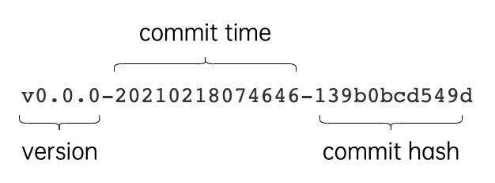

在工程化的Go语言开发项目中，Go语言的源码复用是建立在包（package）基础之上的。本文介绍了Go语言中如何定义包、如何导出包的内容及如何导入其他包。
本章学习目标
- 掌握包的定义和使用
- 掌握init初始化函数的使用
- 掌握依赖管理工具go module的使用
在工程化的Go语言开发项目中，Go语言的源码复用是建立在包（package）基础之上的。本文介绍了Go语言中如何定义包、如何导出包的内容及如何引入其他包。同时也将介绍如何在项目中使用go module管理依赖。
1.包（package）
1.1 包介绍
Go语言中支持模块化的开发理念，在Go语言中使用包（package）来支持代码模块化和代码复用。一个包是由一个或多个Go源码文件（.go结尾的文件）组成，是一种高级的代码复用方案，Go语言为我们提供了很多内置包，如fmt、os、io等。
例如，在之前的章节中我们频繁使用了fmt这个内置包。
package main
import "fmt"
func main(){
fmt.Println("Hello world!")
}
上面短短的几行代码就涉及到了如何定义包以及如何引入其它包两个内容，接下来我们依次介绍一下它们。
1.2 定义包
我们可以根据自己的需要创建自定义包。一个包可以简单理解为一个存放.go文件的文件夹。该文件夹下面的所有.go文件都要在非注释的第一行添加如下声明，声明该文件归属的包。
package packagename
其中：
- package：声明包的关键字
- packagename：包名，可以不与文件夹的名称一致，不能包含
-符号，最好与其实现的功能相对应。
另外需要注意一个文件夹下面直接包含的文件只能归属一个包，同一个包的文件不能在多个文件夹下。包名为main的包是应用程序的入口包，这种包编译后会得到一个可执行文件，而编译不包含main包的源代码则不会得到可执行文件。
1.3 标识符可见性
在同一个包内部声明的标识符都位于同一个命名空间下，在不同的包内部声明的标识符就属于不同的命名空间。想要在包的外部使用包内部的标识符就需要添加包名前缀，例如fmt.Println("Hello world!")，就是指调用fmt包中的Println函数。
如果想让一个包中的标识符（如变量、常量、类型、函数等）能被外部的包使用，那么标识符必须是对外可见的（public）。在Go语言中是通过标识符的首字母大/小写来控制标识符的对外可见（public）/不可见（private）的。在一个包内部只有首字母大写的标识符才是对外可见的。
例如我们定义一个名为demo的包，在其中定义了若干标识符。在另外一个包中并不是所有的标识符都能通过demo.前缀访问到，因为只有那些首字母是大写的标识符才是对外可见的。
package demo
import "fmt"
// 包级别标识符的可见性
// num 定义一个全局整型变量
// 首字母小写，对外不可见(只能在当前包内使用)
var num = 100
// Mode 定义一个常量
// 首字母大写，对外可见(可在其它包中使用)
const Mode = 1
// person 定义一个代表人的结构体
// 首字母小写，对外不可见(只能在当前包内使用)
type person struct {
name string
Age int
}
// Add 返回两个整数和的函数
// 首字母大写，对外可见(可在其它包中使用)
func Add(x, y int) int {
return x + y
}
// sayHi 打招呼的函数
// 首字母小写，对外不可见(只能在当前包内使用)
func sayHi() {
var myName = "七米" // 函数局部变量，只能在当前函数内使用
fmt.Println(myName)
}
同样的规则也适用于结构体，结构体中可导出字段的字段名称必须首字母大写。
type Student struct {
Name string // 可在包外访问的方法
class string // 仅限包内访问的字段
}
1.4 包的引入
要在当前包中使用另外一个包的内容就需要使用import关键字引入这个包，并且import语句通常放在文件的开头，package声明语句的下方。完整的引入声明语句格式如下:
import importname "path/to/package"
其中：
- importname：引入的包名，通常都省略。默认值为引入包的包名。
- path/to/package：引入包的路径名称，必须使用双引号包裹起来。
- Go语言中禁止循环导入包。
一个Go源码文件中可以同时引入多个包，例如：
import "fmt"
import "net/http"
import "os"
当然可以使用批量引入的方式。
import (
"fmt"
"net/http"
"os"
)
当引入的多个包中存在相同的包名或者想自行为某个引入的包设置一个新包名时，都需要通过importname指定一个在当前文件中使用的新包名。例如，在引入fmt包时为其指定一个新包名f。
import f "fmt"
这样在当前这个文件中就可以通过使用f来调用fmt包中的函数了。
f.Println("Hello world!")
如果引入一个包的时候为其设置了一个特殊 _ 作为包名，那么这个包的引入方式就称为匿名引入。一个包被匿名引入的目的主要是为了加载这个包，从而使得这个包中的资源得以初始化。 被匿名引入的包中的init函数将被执行并且仅执行一遍。
import _ "github.com/go-sql-driver/mysql"
匿名引入的包与其他方式导入的包一样都会被编译到可执行文件中。
需要注意的是，Go语言中不允许引入包却不在代码中使用这个包的内容，如果引入了未使用的包则会触发编译错误。
1.5 init初始化函数
在每一个Go源文件中，都可以定义任意个如下格式的特殊函数：
func init(){
// ...
}
这种特殊的函数不接收任何参数也没有任何返回值，我们也不能在代码中主动调用它。当程序启动的时候，init函数会按照它们声明的顺序自动执行。
一个包的初始化过程是按照代码中引入的顺序来进行的，所有在该包中声明的init函数都将被串行调用并且仅调用执行一次。每一个包初始化的时候都是先执行依赖的包中声明的init函数再执行当前包中声明的init函数。确保在程序的main函数开始执行时所有的依赖包都已初始化完成。

每一个包的初始化是先从初始化包级别变量开始的。例如从下面的示例中我们就可以看出包级别变量的初始化会先于init初始化函数。
package main
import "fmt"
var x int8 = 10
const pi = 3.14
func init() {
fmt.Println("x:", x)
fmt.Println("pi:", pi)
sayHi()
}
func sayHi() {
fmt.Println("Hello World!")
}
func main() {
fmt.Println("你好，世界！")
}
输出结果：
x: 10
pi: 3.14
Hello World!
你好，世界！
在上面的代码中，我们了解了Go语言中包的定义及包的初始化过程，这让我们能够在开发时按照自己的需要定义包。同时我们还学到了如何在我们的代码中引入其它的包，不过在本小节的所有示例中我们都是引入Go内置的包。现代编程语言大多都允许开发者对外发布包/库，也支持开发者在自己的代码中引入第三方库。这样的设计能够让广大开发者一起参与到语言的生态环境建设当中，把生态建设的更加完善。
2.go module
在Go语言的早期版本中，我们编写Go项目代码时所依赖的所有第三方包都需要保存在GOPATH这个目录下面。这样的依赖管理方式存在一个致命的缺陷，那就是不支持版本管理，同一个依赖包只能存在一个版本的代码。可是我们本地的多个项目完全可能分别依赖同一个第三方包的不同版本。
2.1 go module介绍
Go module 是 Go1.11 版本发布的依赖管理方案，从 Go1.14 版本开始推荐在生产环境使用，于Go1.16版本默认开启。Go module 提供了以下命令供我们使用：
go module相关命令
| 命令 | 介绍 |
|---|---|
| go mod init | 初始化项目依赖，生成go.mod文件 |
| go mod download | 根据go.mod文件下载依赖 |
| go mod tidy | 比对项目文件中引入的依赖与go.mod进行比对 |
| go mod graph | 输出依赖关系图 |
| go mod edit | 编辑go.mod文件 |
| go mod vendor | 将项目的所有依赖导出至vendor目录 |
| go mod verify | 检验一个依赖包是否被篡改过 |
| go mod why | 解释为什么需要某个依赖 |
Go语言在 go module 的过渡阶段提供了 GO111MODULE 这个环境变量来作为是否启用 go module 功能的开关，考虑到 Go1.16 之后 go module 已经默认开启，所以本书不再介绍该配置，对于刚接触Go语言的读者而言完全没有必要了解这个历史包袱。
GOPROXY
这个环境变量主要是用于设置 Go 模块代理（Go module proxy），其作用是用于使 Go 在后续拉取模块版本时能够脱离传统的 VCS 方式，直接通过镜像站点来快速拉取。
GOPROXY 的默认值是：https://proxy.golang.org,direct，由于某些原因国内无法正常访问该地址，所以我们通常需要配置一个可访问的地址。目前社区使用比较多的有两个https://goproxy.cn和https://goproxy.io，当然如果你的公司有提供GOPROXY地址那么就直接使用。设置GOPAROXY的命令如下：
go env -w GOPROXY=https://goproxy.cn,direct
GOPROXY 允许设置多个代理地址，多个地址之间需使用英文逗号 “,” 分隔。最后的 “direct” 是一个特殊指示符，用于指示 Go 回源到源地址去抓取（比如 GitHub 等）。当配置有多个代理地址时，如果第一个代理地址返回 404 或 410 错误时，Go 会自动尝试下一个代理地址，当遇见 “direct” 时触发回源，也就是回到源地址去抓取。
GOPRIVATE
设置了GOPROXY 之后，go 命令就会从配置的代理地址拉取和校验依赖包。当我们在项目中引入了非公开的包（公司内部git仓库或 github 私有仓库等），此时便无法正常从代理拉取到这些非公开的依赖包，这个时候就需要配置 GOPRIVATE 环境变量。GOPRIVATE用来告诉 go 命令哪些仓库属于私有仓库，不必通过代理服务器拉取和校验。
GOPRIVATE 的值也可以设置多个，多个地址之间使用英文逗号 “,” 分隔。我们通常会把自己公司内部的代码仓库设置到 GOPRIVATE 中，例如：
$ go env -w GOPRIVATE="git.mycompany.com"
这样在拉取以git.mycompany.com为路径前缀的依赖包时就能正常拉取了。
此外，如果公司内部自建了 GOPROXY 服务，那么我们可以通过设置 GONOPROXY=none，允许通内部代理拉取私有仓库的包。
2.2 使用go module引入包
接下来我们将通过一个示例来演示如何在开发项目时使用 go module 拉取和管理项目依赖。
初始化项目 我们在本地新建一个名为holiday项目，按如下方式创建一个名为holiday的文件夹并切换到该目录下：
$ mkdir holiday
$ cd holiday
目前我们位于holiday文件夹下，接下来执行下面的命令初始化项目。
$ go mod init holiday
go: creating new go.mod: module holiday
该命令会自动在项目目录下创建一个go.mod文件，其内容如下。
module holiday
go 1.16
其中：
- module holiday：定义当前项目的导入路径
- go 1.16：标识当前项目使用的 Go 版本
go.mod文件会记录项目使用的第三方依赖包信息，包括包名和版本，由于我们的holiday项目目前还没有使用到第三方依赖包，所以go.mod文件暂时还没有记录任何依赖包信息，只有当前项目的一些信息。
接下来，我们在项目目录下新建一个main.go文件，其内容如下：
// holiday/main.go
package main
import "fmt"
func main() {
fmt.Println("现在是假期时间...")
}
然后，我们的holiday项目现在需要引入一个第三方包github.com/q1mi/hello来实现一些必要的功能。类似这样的场景在我们的日常开发中是很常见的。我们需要先将依赖包下载到本地同时在go.mod中记录依赖信息，然后才能在我们的代码中引入并使用这个包。下载依赖包主要有两种方法。
第一种方法是在项目目录下执行go get命令手动下载依赖的包：
holiday $ go get -u github.com/q1mi/hello
go get: added github.com/q1mi/hello v0.1.1
这样默认会下载最新的发布版本，你也可以指定想要下载指定的版本号的。
holiday $ go get -u github.com/q1mi/hello@v0.1.0
go: downloading github.com/q1mi/hello v0.1.0
go get: downgraded github.com/q1mi/hello v0.1.1 => v0.1.0
如果依赖包没有发布任何版本则会拉取最新的提交，最终go.mod中的依赖信息会变成类似下面这种由默认v0.0.0的版本号和最新一次commit的时间和hash组成的版本格式：
require github.com/q1mi/hello v0.0.0-20210218074646-139b0bcd549d
如果想指定下载某个commit对应的代码，可以直接指定commit hash，不过没有必要写出完整的commit hash，一般前7位即可。例如：
holiday $ go get github.com/q1mi/hello@2ccfadd
go: downloading github.com/q1mi/hello v0.1.2-0.20210219092711-2ccfaddad6a3
go get: added github.com/q1mi/hello v0.1.2-0.20210219092711-2ccfaddad6a3
此时，我们打开go.mod文件就可以看到下载的依赖包及版本信息都已经被记录下来了。
module holiday
go 1.16
require github.com/q1mi/hello v0.1.0 // indirect
行尾的indirect表示该依赖包为间接依赖，说明在当前程序中的所有 import 语句中没有发现引入这个包。
另外在执行go get命令下载一个新的依赖包时一般会额外添加-u参数，强制更新现有依赖。
第二种方式是我们直接编辑go.mod文件，将依赖包和版本信息写入该文件。例如我们修改holiday/go.mod文件内容如下：
module holiday
go 1.16
require github.com/q1mi/hello latest
表示当前项目需要使用github.com/q1mi/hello库的最新版本，然后在项目目录下执行go mod download下载依赖包。
holiday $ go mod download
如果不输出其它提示信息就说明依赖已经下载成功，此时go.mod文件已经变成如下内容。
module holiday
go 1.16
require github.com/q1mi/hello v0.1.1
从中我们可以知道最新的版本号是v0.1.1。如果事先知道依赖包的具体版本号，可以直接在go.mod中指定需要的版本然后再执行go mod download下载。
这种方法同样支持指定想要下载的commit进行下载，例如直接在go.mod文件中按如下方式指定commit hash，这里只写出来了commit hash的前7位。
require github.com/q1mi/hello 2ccfadda
执行go mod download下载完依赖后，go.mod文件中对应的版本信息会自动更新为类似下面的格式。
module holiday
go 1.16
require github.com/q1mi/hello v0.1.2-0.20210219092711-2ccfaddad6a3
下载好要使用的依赖包之后，我们现在就可以在holiday/main.go文件中使用这个包了。
package main
import (
"fmt"
"github.com/q1mi/hello"
)
func main() {
fmt.Println("现在是假期时间...")
hello.SayHi() // 调用hello包的SayHi函数
}
将上述代码编译执行，就能看到执行结果了。
holiday $ go build
holiday $ ./holiday
现在是假期时间...
你好，我是七米。很高兴认识你。
当我们的项目功能越做越多，代码越来越多的时候，通常会选择在项目内部按功能或业务划分成多个不同包。Go语言支持在一个项目（project）下定义多个包（package）。
例如，我们在holiday项目内部创建一个新的package——summer，此时新的项目目录结构如下：
holidy
├── go.mod
├── go.sum
├── main.go
└── summer
└── summer.go
其中holiday/summer/summer.go文件内容如下：
package summer
import "fmt"
// Diving 潜水...
func Diving() {
fmt.Println("夏天去诗巴丹潜水...")
}
此时想要在当前项目目录下的其他包或者main.go中调用这个Diving函数需要如何引入呢？这里以在main.go中演示详细的调用过程为例，在项目内其他包的引入方式类似。
package main
import (
"fmt"
"holiday/summer" // 导入当前项目下的包
"github.com/q1mi/hello" // 导入github上第三方包
)
func main() {
fmt.Println("现在是假期时间...")
hello.SayHi()
summer.Diving()
}
从上面的示例可以看出，项目中定义的包都会以项目的导入路径为前缀。
如果你想要导入本地的一个包，并且这个包也没有发布到到其他任何代码仓库，这时候你可以在go.mod文件中使用replace语句将依赖临时替换为本地的代码包。例如在我的电脑上有另外一个名为liwenzhou.com/overtime的项目，它位于holiday项目同级目录下：
├── holiday
│ ├── go.mod
│ ├── go.sum
│ ├── main.go
│ └── summer
│ └── summer.go
└── overtime
├── go.mod
└── overtime.go
由于liwenzhou.com/overtime包只存在于我本地，并不能通过网络获取到这个代码包，这个时候应该如何在holidy项目中引入它呢？
我们可以在holidy/go.mod文件中正常引入liwenzhou.com/overtime包，然后像下面的示例那样使用replace语句将这个依赖替换为使用相对路径表示的本地包。
module holiday
go 1.16
require github.com/q1mi/hello v0.1.1
require liwenzhou.com/overtime v0.0.0
replace liwenzhou.com/overtime => ../overtime
这样，我们就可以在holiday/main.go下正常引入并使用overtime包了。
package main
import (
"fmt"
"holiday/summer" // 导入当前项目下的包
"liwenzhou.com/overtime" // 通过replace导入的本地包
"github.com/q1mi/hello" // 导入github上第三方包
)
func main() {
fmt.Println("现在是假期时间...")
hello.SayHi()
summer.Diving()
overtime.Do()
}
我们也经常使用replace将项目依赖中的某个包，替换为其他版本的代码包或我们自己修改后的代码包。
go.mod文件
go.mod文件中记录了当前项目中所有依赖包的相关信息，声明依赖的格式如下：
require module/path v1.2.3
其中：
- require：声明依赖的关键字
- module/path：依赖包的引入路径
- v1.2.3：依赖包的版本号。支持以下几种格式：
- latest：最新版本
- v1.0.0：详细版本号
- commit hash：指定某次commit hash
引入某些没有发布过tag版本标识的依赖包时，go.mod中记录的依赖版本信息就会出现类似v0.0.0-20210218074646-139b0bcd549d的格式，由版本号、commit时间和commit的hash值组成。

go.sum文件
使用go module下载了依赖后，项目目录下还会生成一个go.sum文件，这个文件中详细记录了当前项目中引入的依赖包的信息及其hash 值。go.sum文件内容通常是以类似下面的格式出现。
<module> <version>/go.mod <hash>
或者
<module> <version> <hash>
<module> <version>/go.mod <hash>
不同于其他语言提供的基于中心的包管理机制，例如 npm 和 pypi等，Go并没有提供一个中央仓库来管理所有依赖包，而是采用分布式的方式来管理包。为了防止依赖包被非法篡改，Go module 引入了go.sum机制来对依赖包进行校验。
依赖保存位置
Go module 会把下载到本地的依赖包会以类似下面的形式保存在 $GOPATH/pkg/mod目录下，每个依赖包都会带有版本号进行区分，这样就允许在本地存在同一个包的多个不同版本。
mod
├── cache
├── cloud.google.com
├── github.com
└──q1mi
├── hello@v0.0.0-20210218074646-139b0bcd549d
├── hello@v0.1.1
└── hello@v0.1.0
...
如果想清除所有本地已缓存的依赖包数据，可以执行 go clean -modcache 命令。
2.3 使用go module发布包
在上面的小节中我们学习了如何在项目中引入别人提供的依赖包，那么当我们想要在社区发布一个自己编写的代码包或者在公司内部编写一个供内部使用的公用组件时，我们该怎么做呢？接下来，我们就一起编写一个代码包并将它发布到github.com仓库，让它能够被全球的Go语言开发者使用。
我们首先在自己的 github 账号下新建一个项目，并把它下载到本地。我这里就以创建和发布一个名为hello的项目为例进行演示。这个hello包将对外提供一个名为SayHi的函数，它的作用非常简单就是向调用者发去问候。
$ git clone https://github.com/q1mi/hello
$ cd hello
我们当前位于hello项目目录下，执行下面的命令初始化项目，创建go.mod文件。需要注意的是这里定义项目的引入路径为github.com/q1mi/hello，读者在自行测试时需要将这部分替换为自己的仓库路径。
hello $ go mod init github.com/q1mi/hello
go: creating new go.mod: module github.com/q1mi/hello
接下来我们在该项目根目录下创建 hello.go 文件，添加下面的内容：
package hello
import "fmt"
func SayHi() {
fmt.Println("你好，我是七米。很高兴认识你。")
}
然后将该项目的代码 push 到仓库的远端分支，这样就对外发布了一个Go包。其他的开发者可以通过github.com/q1mi/hello这个引入路径下载并使用这个包了。
一个设计完善的包应该包含开源许可证及文档等内容，并且我们还应该尽心维护并适时发布适当的版本。github 上发布版本号使用git tag为代码包打上标签即可。
hello $ git tag -a v0.1.0 -m "release version v0.1.0"
hello $ git push origin v0.1.0
经过上面的操作我们就发布了一个版本号为v0.1.0的版本。
Go modules中建议使用语义化版本控制，其建议的版本号格式如下：

其中：
- 主版本号：发布了不兼容的版本迭代时递增（breaking changes）。
- 次版本号：发布了功能性更新时递增。
- 修订号：发布了bug修复类更新时递增。
发布新的主版本
现在我们的hello项目要进行与之前版本不兼容的更新，我们计划让SayHi函数支持向指定人发出问候。更新后的SayHi函数内容如下：
package hello
import "fmt"
// SayHi 向指定人打招呼的函数
func SayHi(name string) {
fmt.Printf("你好%s，我是七米。很高兴认识你。\n", name)
}
由于这次改动巨大（修改了函数之前的调用规则），对之前使用该包作为依赖的用户影响巨大。因此我们需要发布一个主版本号递增的v2版本。在这种情况下，我们通常会修改当前包的引入路径，像下面的示例一样为引入路径添加版本后缀。
// hello/go.mod
module github.com/q1mi/hello/v2
go 1.16
把修改后的代码提交：
hello $ git add .
hello $ git commit -m "feat: SayHi现在支持给指定人打招呼啦"
hello $ git push
打好 tag 推送到远程仓库。
hello $ git tag -a v2.0.0 -m "release version v2.0.0"
hello $ git push origin v2.0.0
这样在不影响使用旧版本的用户的前提下，我们新的版本也发布出去了。想要使用v2版本的代码包的用户只需按修改后的引入路径下载即可。
go get github.com/q1mi/hello/v2@v2.0.0
在代码中使用的过程与之前类似，只是需要注意引入路径要添加 v2 版本后缀。
package main
import (
"fmt"
"github.com/q1mi/hello/v2" // 引入v2版本
)
func main() {
fmt.Println("现在是假期时间...")
hello.SayHi("张三") // v2版本的SayHi函数需要传入字符串参数
}
废弃已发布版本
如果某个发布的版本存在致命缺陷不再想让用户使用时，我们可以使用retract声明废弃的版本。例如我们在hello/go.mod文件中按如下方式声明即可对外废弃v0.1.2版本。
module github.com/q1mi/hello
go 1.16
retract v0.1.2
用户使用go get下载v0.1.2版本时就会收到提示，催促其升级到其他版本。
3.练习题
- 编写一个
calc包实现加减乘除四个功能函数，在snow这个包中引入calc包并调用其加减乘除四个函数实现数学运算。
假设项目名称为 11
go mod init 11
11/calc/xxx.go
package calc
// Add : 加
func Add(a int, b int) int {
return a + b
}
// Sub : 减
func Sub(a int, b int) int {
return a - b
}
// Multi : 乘
func Multi(a int, b int) int {
return a * b
}
// Divide : 除
func Divide(a int, b int) int {
return a / b
}
11/snow/main.go
package main
import (
"11/calc"
"fmt"
)
func main() {
ret := calc.Add(11, 12)
fmt.Println(ret)
ret = calc.Sub(11, 10)
fmt.Println(ret)
ret = calc.Multi(11, 12)
fmt.Println(ret)
ret = calc.Divide(11, 12)
fmt.Println(ret)
}